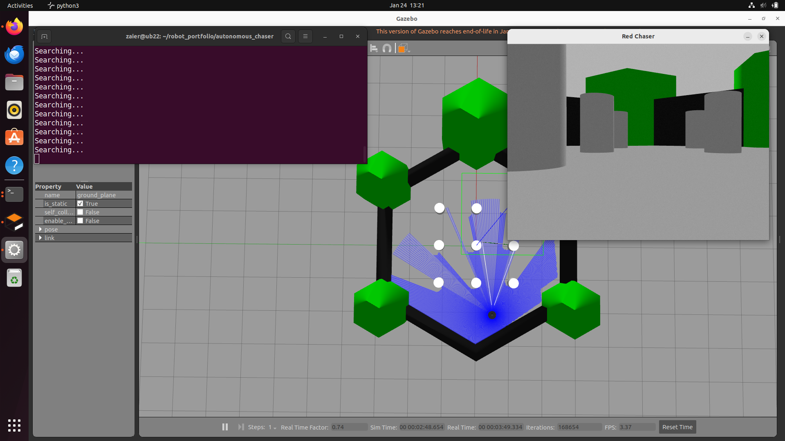
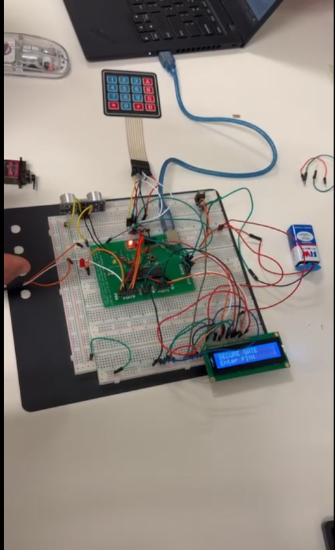
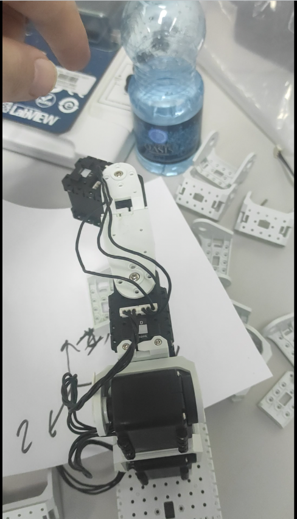
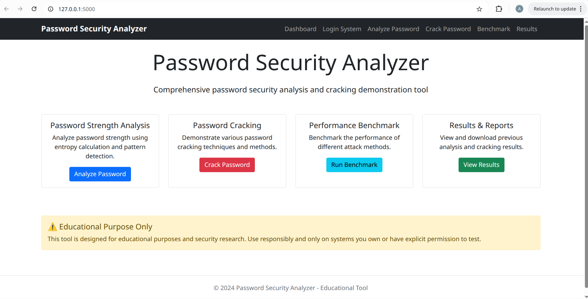

Selected Projects

TurtleBot 2 Navigation
Autonomous navigation implementation using ROS and TurtleBot2. Includes mapping and localization demo.

Computer Vision Pipeline
Real-time object detection system optimized for edge devices.

Smart Gate Automation
Password-protected gate access system using Finite State Machine (FSM) and ultrasonic sensors.

3-DOF Robotic Manipulator
Custom implementation of Forward and Inverse Kinematics (IK) to control a 3-DOF arm.

Password Security Analysis
A security tool demonstrating hashing, brute force, and rainbow table attacks.